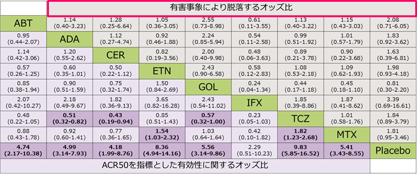
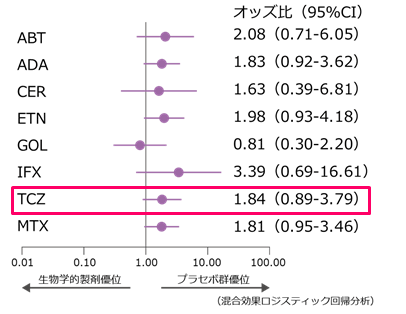

BIO単剤療法メタアナリシスによる安全性に差はない
- ●DMARDs効果不十分なRA患者に対する生物学的製剤単剤療法の有効性と安全性を評価
- ●RCT28試験（8,602例）の結果よりネットワークメタ解析によってオッズ比を算出し、比較した。

有害事象による脱落に関するオッズ比
（プラセボ比較）

どのBIOを使っても安全性（有害事象による脱落）に差はない
有害事象による脱落に関するオッズ比
（プラセボ比較）
どのBIOを使っても安全性（有害事象による脱落）に差はない